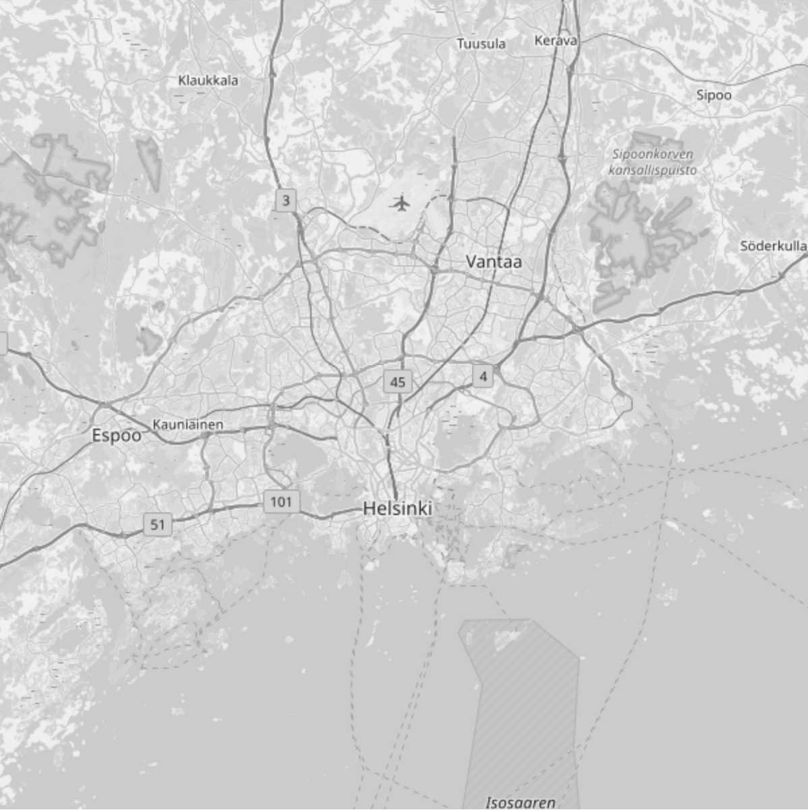

How to Locate Gentrification? |
|
|  |
So, how do you buy at the beginning of the gentrification curve in Helsinki? A map of Helsinki looks (almost uniformly) dull, and doesn't really tell you which areas to look into, does it? A map like this might help you get from Sörnäinen to Eira, but it isn't especially useful as it is when it comes to real estate investment. |
| Next | |